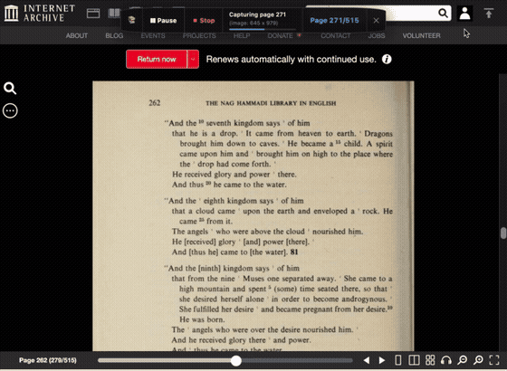

High-Fidelity Book Archiving
Directly in Your Browser
Download complete volumes from Internet Archive and HathiTrust into crisp, multi-page PDFs and clean OCR Markdown with zero external tools or scripts.

Built for Clean, Dependable Archiving
Everything runs entirely within your browser — no Python runtimes or command-line wrappers required.
Dual Platform Integration
Seamlessly integrates with both Internet Archive (BookReader) and HathiTrust (PageTurner), auto-detecting title, authors, volume IDs, and total pages.
Floating In-Page Pill
A non-intrusive, dockable HUD stays directly on your book page with live capture counters, image dimensions, quick settings tray (⚙), and instant pause/resume.
Native In-Memory PDF Engine
Compiles high-resolution scans into standardized PDF documents in seconds without server roundtrips, reducing multi-hundred-megabyte raw scans to a compact ~30MB–50MB file.
Clean Searchable Markdown
Extracts underlying OCR text and figcaptions on every page turn, decodes all HTML entities, and produces a structured .md file ready for Obsidian or research notes.
Rate-Limit & Backoff Aware
Monitors network requests in real time. Honors server Retry-After headers with live countdowns, adaptive page pacing, and zero false-positive page captures.
100% Client-Side Privacy
Your library books and loans stay between you and the archive. No analytics, no remote servers, and temporary page images are collected in memory or automatically cleaned up.
How It Works
Three straightforward steps to archive any public book.
Navigate to Volume
Open any book on archive.org/details/... or babel.hathitrust.org/cgi/pt?... in your browser.
Click Start
The floating pill automatically synchronizes with the reader, captures each page, extracts OCR text, and paces requests.
View Your Files
Click [📁 Downloaded: View Files] to open macOS Finder or Windows Explorer directly to your completed PDF and Markdown notes.
Installation
Load the unpacked extension in Chrome, Brave, Arc, or Edge in under a minute.
- Download or clone this repository.
- In your browser, open
chrome://extensions(orbrave://extensions). - Toggle on Developer mode in the top-right corner.
- Click Load unpacked and select the
extension/distfolder.